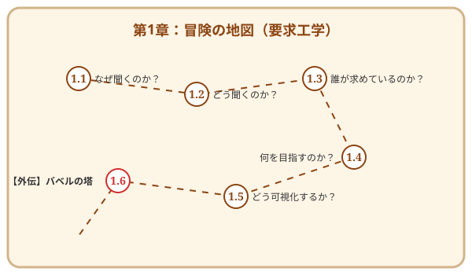

第1章 ドメインという名の異世界探検——要求工学入門
この章で手に入れる力
ソフトウェア開発の冒険は、「何を作るか」を見極めることから始まります。
どんなに優れた技術を持っていても、作るべきものを見誤れば、その技術は活かせません。逆に、ユーザーの真の願いを理解できれば、シンプルな技術でも大きな価値を生み出せます。
この章では、要求工学（Requirements Engineering）の基礎を学びます。ユーザーの言葉の奥にある「隠れた願い」を発見し、それを明確な形に整理し、チームで共有できる図として可視化する——その一連の技術を身につけましょう。
冒険の地図

本章で使うサンプルプロジェクト
本章では、QuestForgeというサンプルアプリを題材に学びます。
QuestForge: 日々のタスクをRPGの「クエスト」に見立てて管理するアプリ。タスクを完了すると経験値を獲得し、レベルアップしていきます。
詳細は1.1節のコラムで紹介しています。サンプルコードは sample-code/questforge/ にあります。
読了後のあなた
この章を読み終えると、あなたは以下のことができるようになります。
- 聴く: ユーザーの言葉から「隠れた願い」を引き出せる
- 対話する: AIペルソナを使って、いつでも仮説を検証できる
- 整理する: 散らばった要求をゴールツリーで体系化できる
- 描く: ユースケース図・アクティビティ図で要求を可視化できる
- 共有する: チームメンバーと認識を揃えられる
さあ、要求工学という冒険の世界へ踏み出しましょう。
さらに学ぶためのリソース（章全体）
各セクションの参考文献に加え、要求工学全般を学ぶためのリソースです。
- 📚 書籍: カール・ウィーガーズ『ソフトウェア要求 第3版』（要求工学の定番テキスト）
- 📚 書籍: ジェラルド・ワインバーグ『要求仕様の探検学』（要求発見の技法を物語形式で学ぶ）
- 📚 書籍: Axel van Lamsweerde『Requirements Engineering』（ゴール指向要求分析の教科書）
- 📚 書籍: マーチン・ファウラー『UMLモデリングのエッセンス 第3版』（UMLの定番入門書）